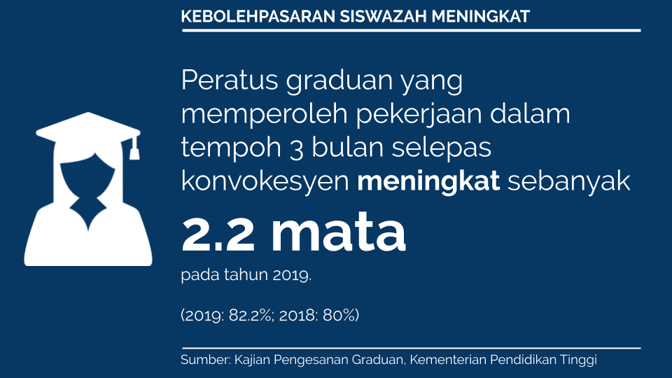
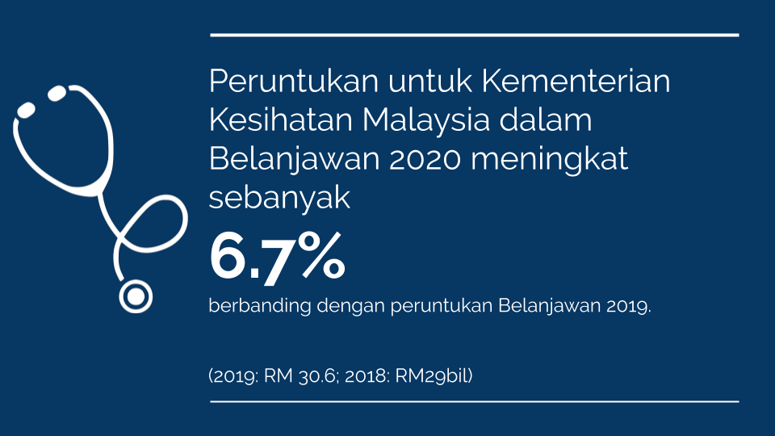

Data visualization is something we use to understand our data. Sure, it has some aesthetic function, but its primary purpose is to communicate what’s in the data.
Unfortunately, some Malaysian ministries just don’t get it. All the Minister wants is a pretty chart to put on Twitter.
It’s not cool if your chart’s designed to mislead, YB.
Graduate marketability
Tahun lepas, kebolehpasaran siswazah kita berjaya mencapai sasaran 80.2%.
Tahun ini kebolehpasaran siswazah kita telah mencapai 82%.
Peningkatan drastik dua tahun kebelakangan ini ialah suatu kejayaan yang besar.
Terima kasih semua. pic.twitter.com/I0gYSWRwTF— Maszlee Malik (@maszlee) September 24, 2019
Dr. Maszlee wants to show that the graduate employability rate has risen from 2018 to 2019. Alright. Here’s the chart:

Let’s start with what graduate employability means. Honestly, I’ve no clue. The visual tells me nothing about that. Let’s do a quick Google search, shall we?
SERDANG, 6 Mei – Kebolehpasaran graduan Universiti Putra Malaysia (UPM) menjangkau 82.2 peratus, iaitu yang tertinggi di kalangan institusi pengajian tinggi di negara ini.
Timbalan Naib Canselor (Hal Ehwal Pelajar dan Alumni) UPM, Prof. Dato’ Dr. Mohammad Shatar Sabran berkata 82.2 peratus daripada graduan UPM memperoleh pekerjaan dalam tempoh tiga bulan selepas konvokesyen mereka. https://upm.edu.my/news/kebolehpasaran_graduan_upm_822_peratus_tertinggi_di_kalangan_ipt-25091?L=bm
Okay, so I presume it measures what percentage of graduates obtained jobs within three months of that convocation. Awesome. We should really just put that in the chart, because calling this “graduate employability” doesn’t tell us much..
Next, let’s think about how someone using the graphic will understand this chart.
The font for the numbers is quite large. But a key part of the visual is the length of the vertical ‘pillars’ supporting each of the ‘bubbles’.
I’m no expert in perception, but let’s say people take the length of the ‘pillars’ to represent the metric.
Surely people will think that the employability rate has improved a lot more than it has?
The increase of the rate from 2018 to 2019 was 2 percentage points. But we’re interested in the ratio of the 2019 to 2018 percentage. 82/80 implies an increase of 2.5%.
The line for 82% is 5 cm on my computer screen whereas the line for 80% is 2.3cm on my screen. That’s a ratio of 2.17 to 1, an increase of 117%.
Put simply, the graph exaggerates the change in the employability rate by almost 50 times.
The cognitive dissonance while processing the chart is stunning. Looking at the chart, I would have thought the Ministry made great progress, while in fact it’s just made a scratch.
Health budgets
JUMLAH BAJET KESIHATAN
ALHAMDULILLAH!1
2019: RM28.68 bilion
2020: RM30.6 bil
% NAIK: 6.7%
KENAIKAN : RM1.92 bil
Bajet O.E:
2019: RM26.49 bil
2020: RM 27.9 bil
% NAIK : 5.3%
KENAIKAN: RM1.41 bilion
Bajet D.E:
2019: RM2.18 bil
2020: RM 2.7 bil
% NAIK : 23.8%
KENAIKAN: RM520 juta pic.twitter.com/7A91JzkfKZ— Dzulkefly Ahmad (@DrDzul) October 11, 2019
The Ministry of Finance raised the budget allocation for the Ministry of Health.

The height of the bars implies that the health budget in 2020 has doubled. This is clearly not the case, and even the graph says so: it states that the increase was by 6.7% (I calculated 5.5%, but it could be a rounding error).
That’s not even the best part. Notice that the bar for the operational budget, at 27.9 billion, is higher than the bar for the 2019 budget, at 29 billion. Apparently 27.9 billion is more than 29 billion.
Wow.
Impact metrics
These two graphics are prime candidates for using impact metrics. I tried making something quick:
 
If you ask me, that’s more honest and clear than what the YBs tweeted.
Thoughts
I taught classes on data visualization at my previous role. And it pains me to see how data visualization standards are not prioritized in policy circles in Malaysia. I’ve seen more than enough dual axis charts, pie charts, 3D donut charts, etc.
This is not ideal. A policy professional’s role is to communicate information to the public. If your reports don’t account for best practices in data visualization, you are bound to confuse, if not mislead, your audience. We know, for instance, that pie charts are a bad choice of visualization, because humans find it difficult to tell quantities from angles as opposed to lengths.
Why? In the 80s, Cleveland and McGill ran a series of experiments which established a hierarchy of which visual cues humans can perceive more accurately. In the case of pie charts, it is popularly believed that we perceive quantities by arc of each of the pie’s slices. This is why waffle charts should be the standard for displaying proportions of a whole: lengths are easier to perceive than angles.

We need to do better when it comes to data visualization in Malaysia, particularly for communicating public policy. Government departments need to prioritise effective communication over aesthetic value.